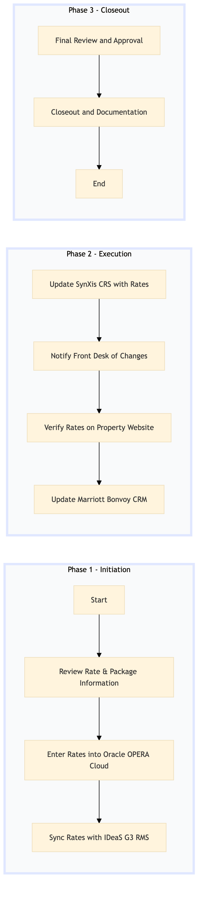

| Role | Steps |
|---|---|
| Revenue Manager | 1.1 1.2 2.1 2.2 2.3 3.2 |
| Front Desk Agent | 3.1 |
| Executive Housekeeper | 3.3 |
| Step | Name | Role | System | Input | Output | KPI | Dec? | Exc? | Pain Point / Risk |
|---|---|---|---|---|---|---|---|---|---|
| 1.1 | Review Rate & Package Information | Revenue Manager | Oracle OPERA Cloud | Rate and package details from external sources | Verified rate and package information | Less than 5 minutes per review | Y | N | Inconsistent data formats from different sources |
| 1.2 | Enter Rates into Oracle OPERA Cloud | Revenue Manager | Oracle OPERA Cloud | Verified rate and package information | Updated rates in Oracle OPERA Cloud | Less than 10 minutes per entry | N | Y | System downtime affecting data entry |
| 2.1 | Sync Rates with IDeaS G3 RMS | Revenue Manager | IDeaS G3 RMS | Updated rates in Oracle OPERA Cloud | Rates synchronized with IDeaS G3 RMS | Less than 2 minutes per sync | N | Y | Data discrepancies between systems |
| 2.2 | Update SynXis CRS with Rates | Revenue Manager | SynXis CRS | Rates synchronized with IDeaS G3 RMS | Updated rates in SynXis CRS | Less than 5 minutes per update | N | Y | Integration issues between systems |
| 2.3 | Notify Front Desk of Changes | Revenue Manager | Oracle OPERA Cloud | Updated rates in SynXis CRS | Notification to Front Desk | Less than 1 minute per notification | N | Y | Communication delays between departments |
| 3.1 | Verify Rates on Property Website | Front Desk Agent | SynXis CRS | Notification from Revenue Manager | Verification of rates on property website | Less than 3 minutes per verification | Y | N | Outdated or incorrect information on the website |
| 3.2 | Update Marriott Bonvoy CRM | Revenue Manager | Marriott Bonvoy CRM | Verified rates on property website | Updated rates in Marriott Bonvoy CRM | Less than 5 minutes per update | N | Y | Data entry errors affecting loyalty program |
| 3.3 | Final Review and Approval | Executive Housekeeper | Oracle OPERA Cloud | Updated rates in Marriott Bonvoy CRM | Approval of rate posting | Less than 2 minutes per review | Y | N | Lack of clear communication on changes |
| 3.4 | Closeout and Documentation | Revenue Manager | Oracle OPERA Cloud | Approval from Executive Housekeeper | Closed out process with documentation | Less than 1 minute per closeout | N | Y | Lost or misplaced documents |
The process of posting rates and packages in a full-service Marriott hotel involves ensuring that all pricing information is accurately entered into the Oracle OPERA Cloud PMS and other relevant systems to maintain consistency across the property's operations.